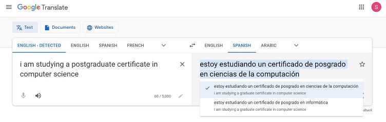

Overview - Launching into Computer Science
Google Translator
The purpose of the exercise was to use Google translate tools to examine the accuracy of a translation and refelct on the quality. The translate tool really provides a tactile approach to those with no second language skills to translate quickly and as accurately as possible. Google translate been a readily available tool offers a simple user interface which is most welcome from an IT/Computer science perspective. It utilises a neural machine translation (NMT) system which was introduced in 2016 which sees it evolve into more of an AI platform. Similar translation servies use the same technologies (DeepL, Translate.com, imtranslator). Google also offers the service as an API which further benefits the field of computer science. With further research into the technology and the platform the initial observation is that the tool offers a user friendly interface, offering quality that most users expect.
Google AI Tools
The purpose of the exercise was to investigate the tools available through Google AI. What is apparent is not only the scale of Google's offerings but the wide range of open-source tools that are available. While the purpose of the research was not to form an understanding of analytics and statisitical models it provided an opportunity to use tutorials and the technology platforms available to perform large scale statistical analysis. By using Tensorflow's learning modules i was able to run a sequential API through a tutorial to build a machine learning model using the Keras API.
Investigation - Adobe
The purpose of this activity was to investigate the components of the adobe web site and what the page does on launch. The website uses many of the components of modern websites including css, cookies, html. Adobe is a subscription based service so it also offers sign in options using external authentication. Below is a table detailing the core parts of the Adobe website and allows it launch, render and run.
Unit 4
| Item | Description |
|---|---|
| Cookies | Typical request to allow or disallow cookies for the user experience. Traditional with nearly all websites. |
| External services | The website uses an adobe service for authorisation services. The user will enter their username and password which will be passed to an extrenal service running on apache. |
| Regional and language settings | The webiste on first launch prompts users to specify their global region to support the language settings, translations on the website but also to direct users to the correct parts of e-commerce stores. |
| CSS | Detailed and well structured css drives the graphical layout and visualisation of the website along with standard icon and image sets, fonts and colours etc. |
Windows 10 OS investigation
The investigation was based around the features of the Windows 10 OS and also how it handles files and folders. The report in the link below provides a summary of findings for this work.
Get in touch
Please feel free to email me if you wish to discuss any content on this e-portfolio or to discuss anything professional.